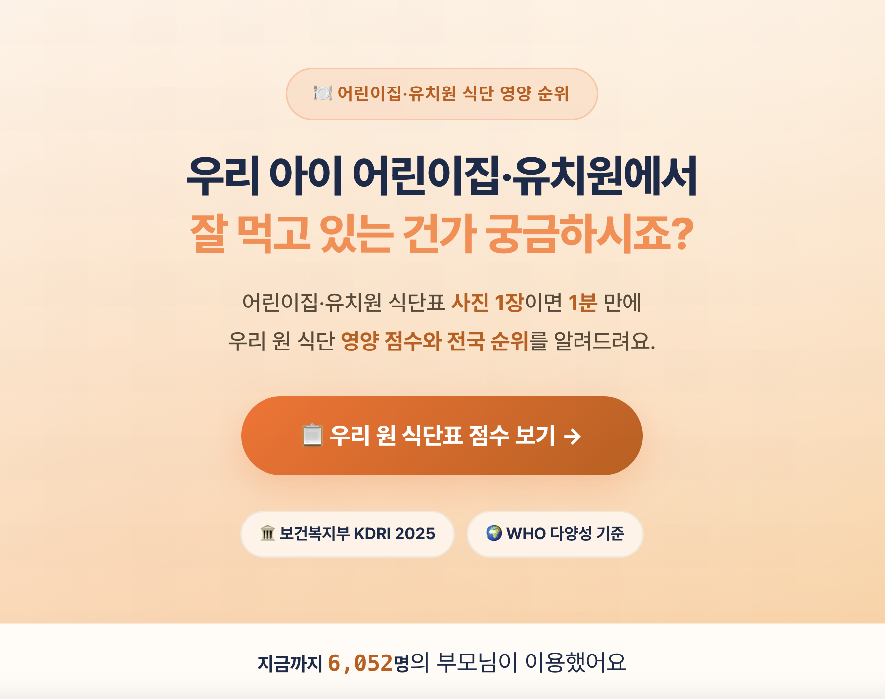
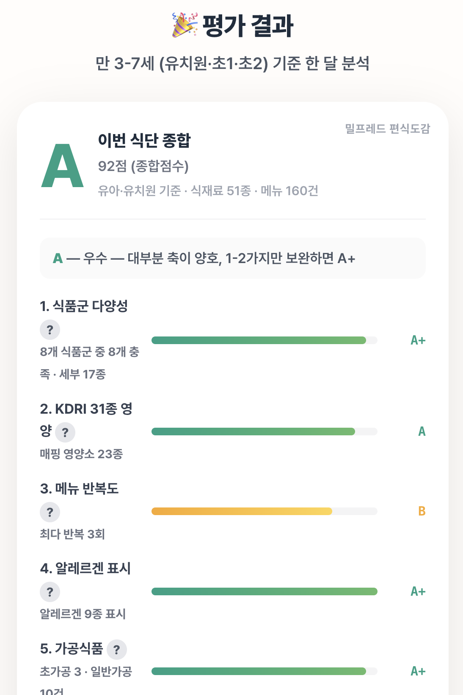

12
GROWTH
매달 오는 식단표가,
가장 싼 학부모 유입 채널
무료 평가로 모으고 · 평가 데이터로 쌓고 · 편식 코칭으로 전환한다
1
미끼 · 무료 식단표 평가
— 매달 받는 식단표 사진 1장이면 1분 만에 우리 원 영양 점수·전국 순위
2
유입 · 자발적 방문
— "우리 아이 잘 먹나?" 궁금한 학부모가 스스로 평가받으러 온다
3
데이터 · 플라이휠
— 기관 식단표·평가가 매핑 코퍼스로 쌓여 진단 엔진이 강해진다
4
전환 · 편식 서비스
— 결과의 '가정 보충 가이드'가 밀프레드 편식 코칭·도감으로 자연 연결
두 마리 토끼
학부모 획득(CAC≈0) + 데이터 플라이휠을 한 번에
실제 화면 — 미끼(무료 평가)부터 결과까지


사진 1장
→ 1분 → 결과 → 편식 전환
↻
매달 새 식단표 =
매달 새 유입 + 새 평가 데이터
· 데이터가 다시 진단 엔진으로 환류
daycare-eval · 어린이집·유치원 식단 영양 순위 — 현재 학부모 모집에 활용 중